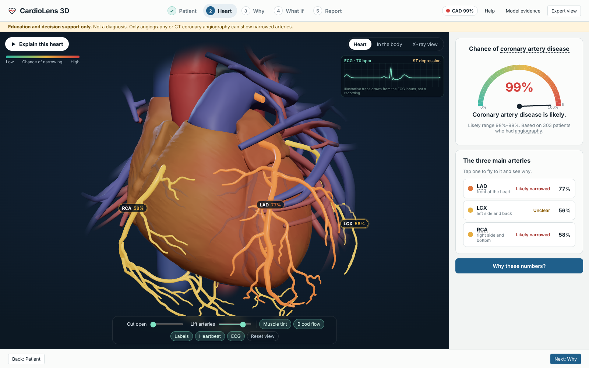
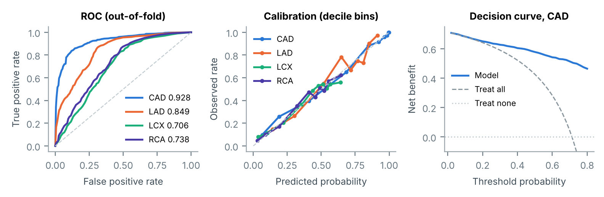
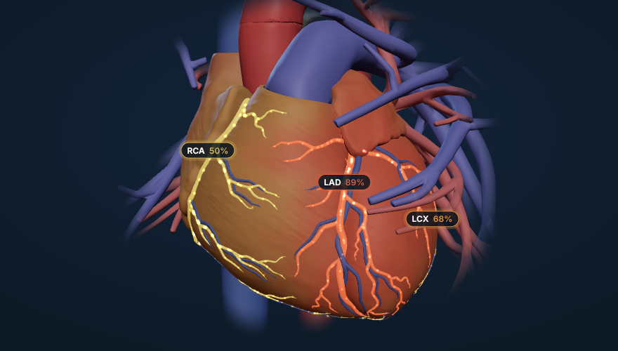
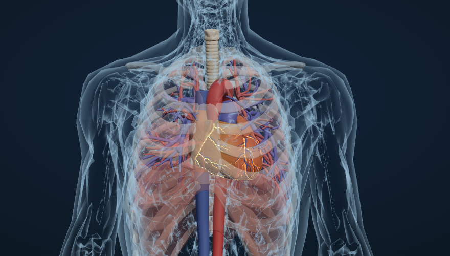
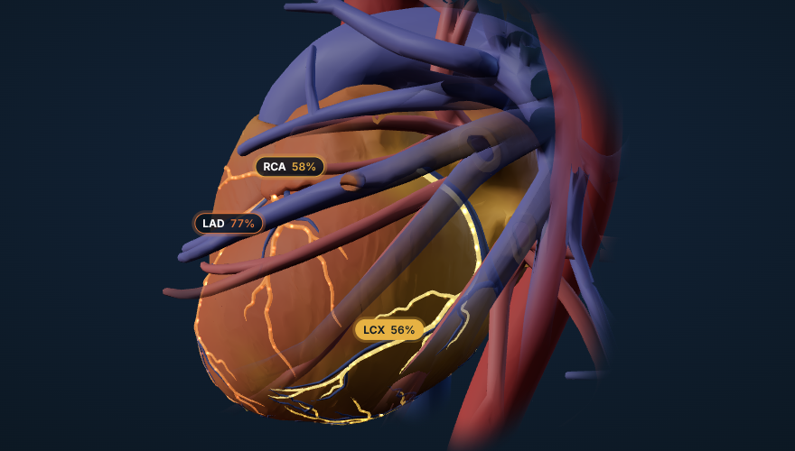

Coronary artery disease and per-vessel stenosis risk, mapped onto a real 3D heart, with the reasons behind every number.

Risk calculators return a single percentage, but cardiologists reason in arteries and territories. Track A asks for a system that predicts overall CAD and LAD/LCX/RCA stenosis from routine clinical data and maps those predictions onto an interactive 3D anatomy, with interpretable explanations. CardioLens does this with four design decisions:
Data. The UCI Extension of Z-Alizadeh Sani dataset (Alizadehsani, Roshanzamir & Sani, 2013; CC BY 4.0) has 303 patients and 59 columns. There are no missing values. Targets: Cath (CAD 71.3%) and vessel status for LAD (58.4%), LCX (39.3%) and RCA (37.6%).
Feature registry. ml/features.py declares all 54 inputs once, with key, display label, group, type, unit, reference range, plausible bounds and a modifiable flag. Groups: demographics 5, history 12, symptoms & exam 13, ECG 7, laboratory 14, echo 3. The training pipeline, the API validator, the input form, the measurements table and the explanation text are all generated from it.
Encoding. Only deterministic row-wise steps happen before the split: Y/N→1/0, sex→sex_male, VHD→ordinal 0–3. Exertional CP is constant and dropped. Everything learned from data (standardisation, BBB one-hot) lives inside a scikit-learn Pipeline, so it is re-fitted in every fold.
Leakage control. LAD, LCX, RCA and Cath are never inputs. This is asserted in the encoder, in the exported bundle and in the test suite. To show why it matters, a model that (wrongly) sees the vessel columns reaches CAD AUC 0.997. A label-permutation test of our pipeline gives AUC 0.492 ± 0.035, so the pipeline does not invent signal.
Label structure. Cath = CAD exactly when ≥1 vessel is stenotic, except for one patient. 86 patients have 0 diseased vessels, 87 have 1, 67 have 2 and 63 have 3. Outer folds are stratified on CAD × number of diseased vessels, so every fold keeps the multi-label mix.
Reference ranges. Standard adult ranges (e.g. LDL <100 mg/dL, HDL ≥40, FBS 70–100, EF 55–70%) are used only for display and for the "modifiable factors" panel, never as model inputs.
Additive scorers. Each target uses a "glass-box" score F(x) = b₀ + Σⱼ fⱼ(xⱼ). With logistic regression each fⱼ is linear on the standardised input. The family (L1 or L2) and C are chosen by 5-fold inner CV on ROC-AUC. Class weights are balanced, and Platt scaling fitted on inner out-of-fold scores restores calibrated probabilities. The CardioModel class also supports Explainable Boosting Machines (piecewise-constant fⱼ). They were evaluated but not selected (§4).
Hierarchical vessels. P(v | CAD) is trained only on CAD-positive patients, where it is defined, and calibrated there. To fit thresholds and conformal quantiles on all patients without leakage, the product P(CAD)·P(v | CAD) is formed from inner out-of-fold predictions of both factors.
Decision layer. Thresholds maximise Youden's J on inner OOF predictions, which favours sensitivity in a screening setting. Mondrian (class-conditional) split-conformal quantiles at α = 0.10 turn each probability into a prediction set: {positive}, {negative} or {both} = uncertain. 60 bootstrap refits give a centred 90% interval on every probability.
Explanations. For an additive model, the interventional SHAP value is exact and closed-form: φⱼ = a·(fⱼ(xⱼ) − E[fⱼ(Xⱼ)]). It matches shap.LinearExplainer to 4·10⁻¹⁶. For vessels, the log-odds h = logit(σ(L₁)σ(L₂)) is attributed with integrated gradients in term space: φⱼ = Δ₁ⱼ∫∂h/∂L₁ + Δ₂ⱼ∫∂h/∂L₂ (48-point quadrature, residual redistributed so contributions sum exactly). Against KernelSHAP on the same reference point, the mean correlation is r = 0.93 and the top-5 features overlap by 89%.
Protocol. Repeated stratified 5-fold × 5 outer CV (25 folds) of the entire CardioModel. Inside each outer training set: 5-fold inner CV for family and C, and separate 5-fold inner OOF predictions for calibration, threshold and conformal quantiles. Metrics are mean ± SD over the 25 outer folds. Curves use pooled out-of-fold predictions. All seeds are fixed (42).
| Target | Selected model | ROC-AUC | 95% CI* | PR-AUC | Acc. | Prec. | Recall | Spec. | F1 | Brier | Coverage |
|---|---|---|---|---|---|---|---|---|---|---|---|
| CAD | Logistic L2 | 0.928 ± 0.029 | 0.899–0.956 | 0.970 | 0.845 | 0.947 | 0.830 | 0.883 | 0.883 | 0.098 | 90.0% |
| LAD | P(CAD) × logistic L1 | 0.849 ± 0.040 | 0.792–0.884 | 0.882 | 0.771 | 0.799 | 0.816 | 0.712 | 0.803 | 0.155 | 89.4% |
| LCX | P(CAD) × logistic L1 | 0.706 ± 0.054 | 0.633–0.751 | 0.578 | 0.643 | 0.532 | 0.810 | 0.537 | 0.638 | 0.207 | 88.3% |
| RCA | P(CAD) × logistic L1 | 0.738 ± 0.050 | 0.673–0.792 | 0.604 | 0.642 | 0.517 | 0.830 | 0.532 | 0.633 | 0.198 | 89.2% |
*Bootstrap CI of pooled out-of-fold AUC (1,000 resamples). Threshold metrics use the in-fold Youden threshold. At a fixed 0.5 threshold, accuracy is CAD 0.865, LAD 0.789, LCX 0.636, RCA 0.658. Coverage is the empirical coverage of the 90% conformal sets (target 90%). Singleton (confident) sets: CAD 90%, LAD 66%, LCX 48%, RCA 50%.
| Test cohort | n | CAD | ROC-AUC (95% CI) |
|---|---|---|---|
| Cleveland (USA) | 304 | 46% | 0.764 (0.71–0.82) |
| Budapest (Hungary) | 293 | 36% | 0.767 (0.71–0.82) |
| Zurich/Basel (Switzerland) | 123 | 93% | 0.702 (0.47–0.91) |
| VA Long Beach (USA) | 200 | 75% | 0.636 (0.55–0.72) |
| All four, pooled | 920 | 55% | 0.756 (0.725–0.787) |
Scope: this tests a separate reduced model for overall CAD only, not the deployed 54-input model; LAD/LCX/RCA have no external validation. A reduced CAD model on the 10 inputs both datasets share (age, sex, chest-pain type, resting BP, fasting sugar >120, ECG ST-T change, LVH, total cholesterol ≈ LDL+HDL+TG/5) was trained on all 303 Z-Alizadeh Sani patients and applied unchanged to the UCI Heart Disease cohorts (same label: ≥50% stenosis on angiography). Cleveland's ca column is excluded: it is effectively part of the answer. Internal nested-CV AUC of this reduced model: 0.903 ± 0.043. Pooled calibration is near ideal (intercept 0.03, slope 1.00); but the training-site threshold (0.70) is too strict elsewhere: sensitivity 39%, specificity 88% (78% / 63% at 0.5), so a new hospital must set its own threshold. Trained inside UCI the same inputs reach 0.839, an upper bound for transfer. Vessels cannot be tested externally (UCI has no per-artery labels).
| Same pipeline, same data | CAD accuracy |
|---|---|
| Nested, repeated CV (25 outer folds) | 84.5% |
| One random 80/20 split, median of 100 | 85.2% |
| One split, 5th–95th percentile | 78.7–91.8% |
| One split, luckiest of 100 | 95.1% |
| Threshold tuned on the test set (leaky) | 96.7% |
With 61 test patients, one split's accuracy swings by ±7 points depending on who lands in it; 15% of splits show ≥90%. Reporting a lucky split, or tuning the threshold on the test patients, can produce the 95%+ figures common for this dataset. Every number here comes from folds whose patients were never seen in any modelling choice (ml/split_optimism.py).

| Algorithm | CAD | LAD | LCX | RCA |
|---|---|---|---|---|
| Logistic L2 | 0.931 | 0.843 | 0.688 | 0.730 |
| Logistic L1 | 0.924 | 0.838 | 0.706 | 0.742 |
| SVM (RBF) | 0.922 | 0.841 | 0.678 | 0.722 |
| Random forest | 0.925 | 0.853 | 0.724 | 0.715 |
| Extra trees | 0.924 | 0.840 | 0.696 | 0.732 |
| LightGBM | 0.918 | 0.837 | 0.730 | 0.723 |
| XGBoost | 0.915 | 0.838 | 0.728 | 0.720 |
| CatBoost | 0.919 | 0.841 | 0.724 | 0.704 |
| EBM (glass-box GAM) | 0.924 | 0.830 | 0.676 | 0.712 |
| Full pipeline, direct vessels | 0.928 | 0.840 | 0.703 | 0.746 |
| Full pipeline, hierarchical (deployed) | 0.928 | 0.849 | 0.706 | 0.738 |
The first nine rows are single uncalibrated models with direct targets (5×5 nested CV, same seed). Every algorithm is within ±0.01 AUC on CAD/LAD/RCA. LightGBM's LCX 0.730 vs 0.706 is well inside the fold-to-fold SD (±0.054), so it is noise, not a reason to give up exact, browser-portable explanations.
| ΔAUC (hier − direct) | Brier direct → hier | |
|---|---|---|
| LAD | +0.009 ± 0.024 (17/25 folds) | 0.164 → 0.155 |
| LCX | +0.003 ± 0.050 (13/25) | 0.215 → 0.207 |
| RCA | −0.008 ± 0.041 (10/25) | 0.199 → 0.198 |
| P(vessel) > P(CAD) | 704 out-of-fold cases (direct) → 0 (hierarchical) | |
Discrimination is equivalent, calibration improves for all three vessels, and anatomical contradictions disappear. That last property matters for a visual system: the colours on the heart are always mutually consistent.
| Group | n | CAD | LAD | LCX | RCA |
|---|---|---|---|---|---|
| Female / male | 127 / 176 | 0.96 / 0.90 | 0.85 / 0.83 | 0.70 / 0.69 | 0.78 / 0.70 |
| Age < 60 / ≥ 60 | 162 / 141 | 0.93 / 0.87 | 0.88 / 0.72 | 0.74 / 0.54 | 0.76 / 0.66 |
| Non-diabetic / diabetic | 213 / 90 | 0.91 / 0.96 | 0.88 / 0.70 | 0.71 / 0.61 | 0.74 / 0.61 |
Vessel localisation is weaker in older and diabetic patients (diffuse multi-vessel disease), so the UI and README flag it.
Source. BodyParts3D 4.0 (© 2008 DBCLS, CC BY-SA 2.1 JP), the resource recommended in the brief, read from a GitHub mirror of its STL files. 85 parts are selected by FMA id in anatomy/anatomy_registry.json:
Processing (build_anatomy.py):
Perfusion territories. For every myocardial vertex, distances to point clouds sampled from the LAD, LCX and RCA trees are turned into soft weights w ∝ exp(−(d − dmin)/6 mm), faded with distance from any epicardial vessel. The weights are stored in the vertex COLOR_0 attribute. A shader patch on MeshStandardMaterial blends the muscle colour toward each territory's current risk colour, in proportion to that risk, so healthy muscle stays muscle-coloured.
Centrelines for flow. Each coronary mesh is voxelised (0.6 mm), filled and 3D-skeletonised. The skeleton becomes a graph rooted at the voxel nearest the parent vessel (aorta → LM → LAD/LCX; aorta → RCA → branches). Ostium-to-tip Dijkstra paths with spur pruning give 56 smoothed polylines that carry the flow particles.



Rendering and interaction (React Three Fiber, HeartScene.tsx):
Performance without a GPU. No shadow maps or HDR environment, a low-power WebGL context, one draw call per part. Adaptive quality (drei PerformanceMonitor) watches the real frame rate and steps down when it drops: lower render resolution, flow particles off, then a 12 k-triangle myocardium (instead of 60 k) and a paused heartbeat; it steps back up when frames recover. Worst case measured, with no GPU at all (SwiftShader software rendering on 2 CPU cores, 1440×900): 2.0 fps at full quality → 4.1 fps in low mode, still usable. ?fps=1 shows a live counter for measuring any machine. If WebGL is unavailable or the 3D context fails, a 2D artery diagram with the same colours replaces the canvas and everything else keeps working.
Honest mapping. The dataset gives vessel-level labels, not lesion positions. CardioLens therefore colours whole vessels and states this on the canvas. RWMA is treated as an input, not a lesion map. The bullseye uses the standard AHA segment → artery assignment and is labelled as the expected ischaemic territory.
Data flow. Every edit re-scores the patient (60 ms debounce): POST /api/predict computes in under 1 ms, or the in-browser engine in about 1–9 ms. The result drives the 3D materials and every dashboard panel at once.
One model, two engines. train_final.py exports the fitted pipeline as model_bundle.json: additive terms, Platt parameters, thresholds, conformal quantiles and 60 bootstrap models. ml/engine.py (server) and engine.ts (browser) implement the same arithmetic. Tests check that sklearn = Python engine = TypeScript engine on all 303 patients for probabilities, intervals, sets and attributions, to 1e-9.
API (FastAPI, OpenAPI docs at /docs):
/api/predict validates every input against the feature registry. It rejects unknown keys and invalid categories with 422, warns on out-of-range values, and fills omitted inputs with the median patient and lists them.?check=true re-scores through the original sklearn pipelines; /api/whatif returns before/after/delta; /api/predict/batch and /api/meta complete the interface.Extensibility. Three registries decouple the layers: ml/features.py (clinical inputs), config/registry.json (targets, their meshes and AHA segments) and anatomy/anatomy_registry.json (meshes by FMA id, with an optional target binding). A new lab value, vessel target or anatomical structure is a registry entry plus a re-run; the UI and API need no code changes.
Two views. A guided view walks beginners through five steps (Patient → Heart → Why → What if → Report), with a narrated 3D tour, glossary tooltips on every technical term, and a one-click PDF report. An expert view shows every panel at once.
Dashboard components (brief §3):
make install # pinned Python + Node dependencies make reproduce # retrain (nested CV), external validation, split study, then check all 20 reported metrics (±0.005) + tests make test # 23 tests: no-leakage (LAD/LCX/RCA/Cath never inputs), engine parity to 1e-9, API contract make e2e # 19 browser checks: expert + guided journeys, note import, both PDFs, no-WebGL fallback, server = browser make serve # FastAPI + app → http://localhost:8000 (or: docker compose up --build) make single # CardioLens3D.html: the whole app, model and 3D heart in one offline file (hosts anywhere)
Workflow: pick a dataset patient (its angiography result is shown), a preset, or edit any value → rotate the heart and click a vessel → read the verdict and explanation → try modifiable factors → check similar patients → export the report.
Dataset: Alizadehsani R., Roshanzamir M., Sani Z. (2013). Extention of Z-Alizadeh Sani dataset. UCI Machine Learning Repository, doi:10.24432/C5461K, CC BY 4.0.
Anatomy: BodyParts3D, © 2008 Life Science Integrated Database Center, CC BY-SA 2.1 Japan; derived meshes are shared under the same licence.
Standards: Cerqueira M.D. et al., AHA 17-segment model, Circulation 2002;105:539–542. Software: scikit-learn, interpret, SHAP, LightGBM/XGBoost/CatBoost, FastAPI, three.js / React Three Fiber, trimesh, meshoptimizer. Code: MIT licence.